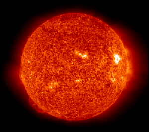
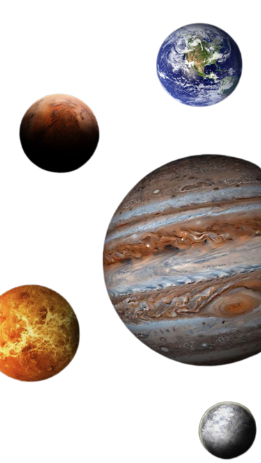
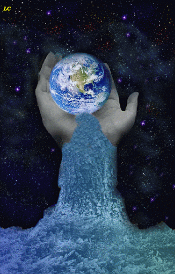

Explosão do Sol
Após uma serie de estudo, mais ou menos, 5 bilhões de anos o sol vai consumir todo o seu combustível, causando na expansão para o gigante vermelha, com isso ele ira acabar consumindo alguns planetas, como Mercúrio, Vênus e até mesmo a Terra no processo.

Nome do Planeta Terra
Uma fato curioso sobre o nosso planeta, é que ele é único que não tem o nome de um Deus grego ou Romano, mas os outros planetas tem essa característica do nome. o nome Terra vem do latim que tem o significado de Sol, Região e Pais.

Água no Planeta Terra
Outro fato interessante da terra é que ela é o único planeta do Sistema Solar, que tem água nos três estados, são eles Gasoso, Solido e liquido.
